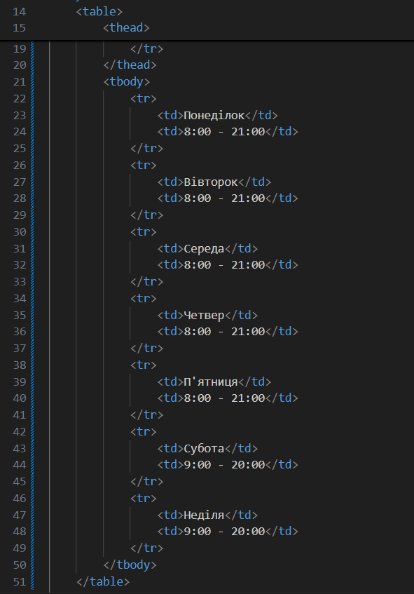

Тема: ТЕГИ ТА АТРИБУТИ HTML-ДОКУМЕНТА. СТРУКТУРНА РОЗМІТКА. GIT.GITHUB. РОБОТА З РЕПОЗИТОРІЯМИ. ОПИС ЛОГІКИ ВЛАСНОГО WEB-ЗАСТОСУНКУ.
Мета: придбати практичні навички роботи з GitHub, репозиторіями, HTML-документом, таблицями, , зображеннями, посиланнями, списками, формами Створити шаблон звітного HTML-документом для відображення результатів роботи всіх лабораторних робіт.
Посилання на місце розташування сайтуГалузь: сайт клініки.
Функціональні вимоги:
- Авторизація. Клієнт може авторизуватися та отримати певні додаткові функціональні можливості, а саме:
- Переглядати історію своїх візитів.
- Отримувати результати аналізів та обстежень.
- Перегляд графіку роботи клініки.
- Перегляд інформації про лікарів.
- Створення відгуків про роботу клініки.
- Можливість записатися на прийом до певного лікаря.
- Можливість переглянути геолокацію клініки.
Нефункціональні вимоги:
- система повинна мати відкриту архітектуру;
- система повинна мати веб-інтерфейс;
- інтерфейс користувача має бути зручним та інтуїтивно-зрозумілим;
- система повинна бути крос-платформною.
HTML-код таблиці:

Тег <table> позначає початок талиці. Тег </table> закриває її.
Тег <tr> позначає рядок. Тег <td> позначає стовпець. Те, що вписано всередині буде відображатися в таблиці.
HTML-код зображення:
Тег <img> вказує, що тут буде зображення.
Параметр scr вказує на розташування зображення.
Параметр alt призначений для альтернативного опису зображення, яке буде застосовано якщо зображення не відображається або для текстового відтворення сайту.
HTML-код форми:
<form>: Цей тег створює HTML-форму, яка використовується для збору даних користувача.
<label>: Цей тег пов'язує текстову мітку з елементом управління форми, таким як <input>, <select> або <textarea>.
<input>: Універсальний тег для створення інтерактивних елементів управління.
<textarea>: Багаторядкове текстове поле, що дозволяє користувачеві вводити текст великого обсягу.
<select>: Створює випадаючий список, який дозволяє користувачеві обрати один варіант зі списку.
<option>: Використовується всередині <select>, щоб визначити окремий варіант у списку.
<value>: Містить значення, яке буде відправлено на сервер, якщо цей варіант обрано.
<type="submit">: Це спеціальний тип <input>, який створює кнопку для відправлення даних форми на сервер.
Вигляд головної сторінки застосунку зроблений в Figma:
Код головної сторінки:
Посилання на GitHub з кодом вебзастосункуВисновки:
У ході даної практичної роботи були засвоєні ключові аспекти роботи з системою GitHub. На практиці було засвоєно основні теги для побудови HTML-сторінок. Самостійна робота дала можливість познайомитись та засвоїти нові теги та параметри, які будуть корисними у майбутньому. Пророблена робота задає фундамент для подальшої розробки та покращення вебзастосунку.